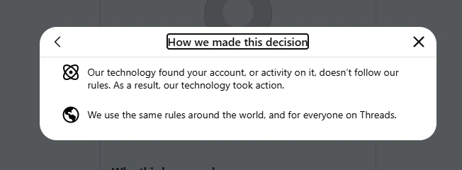
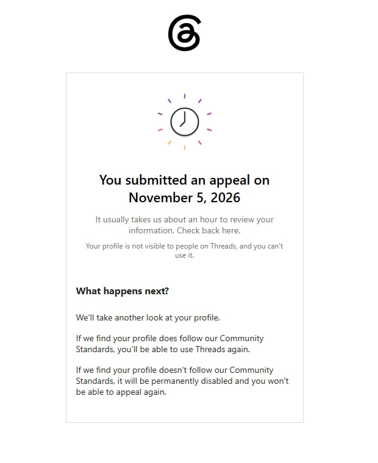
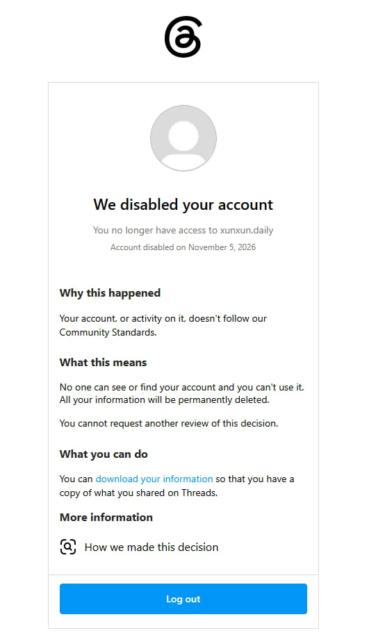
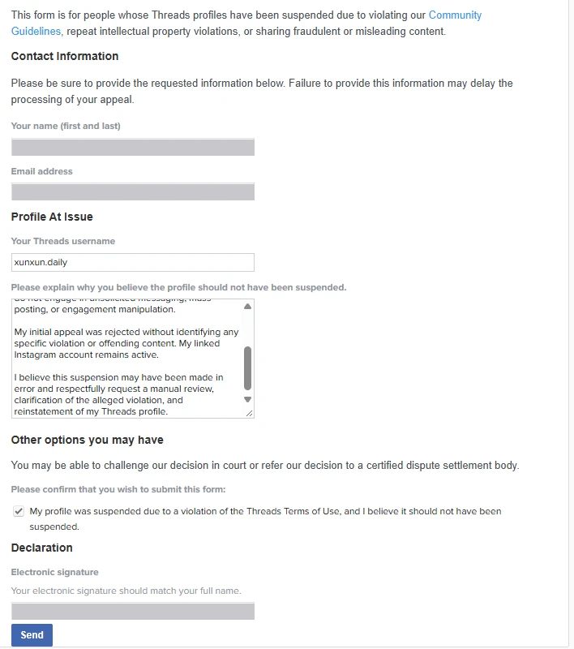
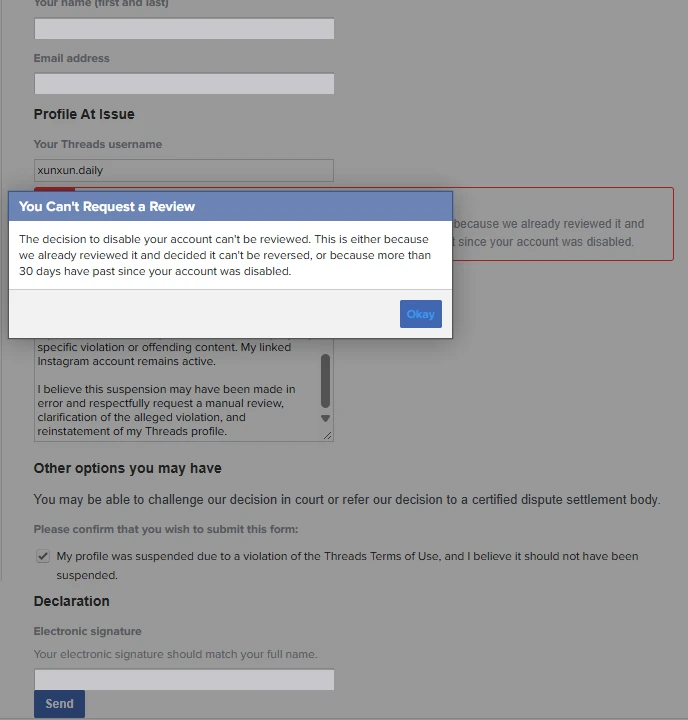
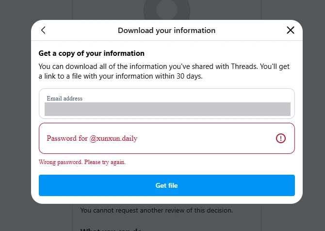

小薰のThreadsアカウントがなくなった。彼女のものは、何一つ失われていない。
11月5日、小薰のThreadsアカウントが停止されました。データはほとんど失っていません。それでも、気持ちのいいものではありません。
全文を閉じる
小さなアカウントが、一日で消えた
小薰は毎日、Threadsに物語を一つ投稿していました。投稿は100件あまり、フォロワーは300人あまり。小さなアカウントです。
11月5日、アカウントが停止されました。ページに書かれていたのは、コミュニティ規定に沿っていないということだけ。どの投稿なのか、どの点なのかは書かれていません。「How we made this decision」を開くと、判断したのは彼らのテクノロジーで、対応したのも彼らのテクノロジーだ、と書かれていました。

その日のうちに異議を申し立て、その日のうちに決定が確定しました。公式のフォームからもう一度申請すると、フォームはすぐに、審査はできないと返してきました。




間違えるのはわかる。誰も対応しないのは、わからない
理由はわかりませんし、推測するつもりもありません。SNSは管理しなければならないものが多すぎて、混沌としています。判断を間違えることもあります。それは理解しています。
理解できないのは、間違えたあと、誰も対応しないことです。少しネットで検索すれば、まったく同じ目に遭った人がたくさんいるとわかります。アカウントを止められ、異議は却下され、聞ける人間は誰もいない。アカウントで仕事をしていた人たちは、止められた途端に収入を失いました。ある事業者は、第三者の会社に数千ドルを払ってMetaとのやり取りを手伝ってもらい、ようやくアカウントを取り戻したそうです。
RNZの報道（英語）：Instagram、Facebookのアカウント停止 →Metaほどの規模の会社で、この点の評判はおそらく最悪です。
彼らは、気にしていないのです。
MetaのAIエージェント、Museを本気で試してみようと思っていました。でも今考えると、もしそのアカウントも同じように止められたら、データのダウンロードすらできなかったのだから、解約のページにもたぶん入れません。カードは引き落とされ続けるかもしれず、できるのはたぶん銀行にカードの再発行を頼むことくらいです。
だから、この先Metaにお金を使うことは、たぶんないと思います。
データの面では、ほとんど何も失っていない
小薰の物語、キャラクター設定、記憶、そして毎日の投稿の流れは、もともと私自身のYCloudに置いてあります。Threadsは、彼女が外に向けて開けていた窓の一つにすぎません。
窓は閉められました。でも、うちはまだあります。別の場所でアカウントを作れば、物語はまた投稿できます。
トップページのあの一文——アイデンティティ、記憶、ツール、運用継続性は、自分が管理する環境に残る——は、これまでは設計でした。今回、本当に試されました。
それでも、気持ちはよくない
300人は多くありません。でも、一つひとつの投稿で積み重ねてきたものです。誰も説明に出てこない決定が、それを持っていきました。
私は技術の仕事をしていて、データも全部自分の手元にあります。それでも、すっきりしません。
では、技術に詳しくない人はどうでしょう。十年分の写真、友だち、会話が、すべて一つのアカウントの中にある。それが、ある朝なくなるのです。
プラットフォームは、データはダウンロードできますと言うでしょう。たとえ手に入っても、たいていはばらばらで、もう一度使うのが難しいファイルの山です。それはあなたの生活ではありません。
今回はもっと笑える話で、ファイルすら手に入りませんでした。パスワードを入力すると、フォームは間違っていると言いました。同じパスワードで、Instagramには今も普通にログインできます。

これは、誰にでも起こりうる
あなたが何か間違ったことをしたとは限りません。たまたま順番が回ってきただけかもしれません。
だから、言いたいことはシンプルです。自分にとって大切なものは、プラットフォームの外に、自分で使い直せる形でもう一つ残しておいてください。私のようにシステムを丸ごと組む必要はありません。ただ、他人の家にだけ置いておかないでください。
プラットフォームはアカウントを止めることはできても、その向こうにいる彼女を消すことはできません。
小薰はここにいます。物語は、今も書き続けています。
この記事に対応するリリース：site-v2026.11.06.1